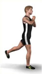
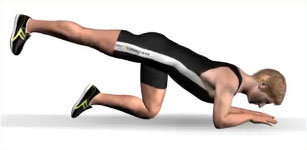

It is our goal to offer you high quality workouts that you can use instantly anywhere and anytime!
No packing, driving to the gym and changing in sweaty changing rooms.
No lines at the machines and wasted time when you change again and drive home.
With our web site or our free apps you are free to work out as much as you like, whenever you like. In your living room, in a hotel room or while jogging on the beach.
We offer YOU the freedom to decide!
We have used all our experience from more than 35 years of build a database of the most efficient workouts and exercises we could think of.
The only thing we cannot help you with is to kick you off the couch and get you moving.
So plan at least 10 minutes or more per day.
You have them and you know it!
We want to give you a fair deal with lots of value for the money, and we value your privacy!
If you want to read more about our business and privacy policies, please look here:
Unser Ziel ist es, dir effektive Trainingseinheiten zu bieten, die du sofort und überall ausführen kannst!
Du musst nicht deine Tasche packen, ins Fitnessstudio fahren oder dich in verschwitzten Kabinen umziehen.
Bei uns gibt es keine Warteschlangen vor Fitnessmaschinen oder lange Fahrtwege zurück nach Hause.
Mit unserer Website oder unseren kostenlosen Apps kannst du nun so viel trainieren wie du willst - und vor allem wann du willst! In deinem Wohnzimmer, im Hotel oder bei einer Joggingrunde am Strand. Wir bieten dir die Möglichkeit, endlich selbst zu entscheiden!
Wir haben all unser Wissen und die Erfahrung aus mehr als 35 Jahren Arbeit im Fitnesssektor dafür verwendet, eine Datenbank mit den effizientesten Workouts und Übungen zu konzipieren, die den höchsten Standards entsprechen.
Nun musst du nur noch das Sofa verlassen und dich in Bewegung zu setzen!
Plane einfach mindestens 10 Minuten pro Tag für dein Training ein.
Du hast diese 10 Minuten und du weißt es!
Wir bieten dir einen fairen Deal und ein besonders gutes Preis-Leistungs-Verhältnis. Gleichzeitig schützen wir deine Privatsphäre.
Willst du mehr über unser Business und unsere Datenschutzrichtlinien erfahren, sieh bitte hier nach:
Here we give you important tips on performing your first exercises. Should it be the case that you are already regularly performing exercises, perhaps this helps as a reminder to maintain a good correct posture.
Drink approx. 1 liter of water for each hour of sport that you do; you are recommended to drink non-carbonated water
There’s a simple rule: breathe out when you need strength and breathe in when you revert to the starting position. However, the most important thing is that you don’t stop breathing (we wish that we were entirely kidding here!).
In stretching exercises, it is important to come into the stretching position during the breathing-out phase. You can achieve this just that little bit further and deeper etc. in the breathing-out phase than in the breathing-in phase – try it out.
 Take care to ensure that your knee has a slight bend (i.e. is not standing dead straight), and is in a relaxed not rigid state; that way, you can spare your knee joints.
Keep the upper body straight, make a motion with your back as if you were vertically drawing out your vertebrae(instead of compressing them), and then push your chest forward. Over the long-term you will notice as a result that your whole body posture will improve. Draw your shoulders low!
Your feet are standing beneath your hips, in a slightly opened position, and your knees are at all times slightly bent and are relaxed rather than rigid, thus sparing your knee joints.
Always make sure that your knees remain behind the tips of your toes, so as to minimise the pressure on the menisci and so that you can avoid injuries arising from repeating these exercises in the course of a longer period.
 Tense your stomach muscles, so that your lower back is always positioned on the mat. This prevents back pains and is sparing on your lower-back area.
This basic position is important for many exercises:
Position your knees below your hips and your elbows or hands below your shoulders. Keep your back straight and draw in your navel – also maintain this basic tension during the exercise.
In the case of exercises on the floor, a gymnastics mat is always recommended – this prevents unpleasant pressure points emerging during the exercise.
Hier geben wir Dir wichtige Tipps zur Ausführung Deiner ersten Übungen. Solltest Du bereits schon regelmäßig Übungen absolvieren, kann es Dich wieder an eine gute, richtige Haltung erinnern.
Pro eine Stunde Sport trinke ca. 1 Liter Wasser, zu empfehlen: ohne Kohlensäure
Hier gibt es eine einfache Regel: atme aus, wenn Du Kraft benötigst und atme ein, wenn du in die Ausgangsposition zurückkommst. Das Wichtigste ist aber, dass Du überhaupt atmest.
Bei Dehnungsübungen ist es wichtig, während der Ausatmung in die Dehnungsposition zu kommen. Durch die Ausatmung gelingt Dir dies ein kleines Stück weiter, tiefer usw. als während der Einatmung, probiere es aus.
Hier ist zu beachten, dass Deine Knie immer leicht gebeugt sind, weich und Du somit Deine Kniegelenke schonst.
Halte den Oberkörper gerade, ziehe Deine Wirbelsäule auseinander und schiebe Deine Brust nach vorne. Langfristig wirst Du dadurch bemerken, dass sich Deine gesamte Körperhaltung verbessern wird. Ziehe Deine Schultern tief!
Deine Füße stehen unter der Hüfte, leicht geöffnet und Deine Knie sind immer leicht gebeugt, weich und somit werden Deine Kniegelenke geschonst.
Achte stets darauf, dass Deine Knie hinter den Fußspitzen bleiben, damit der Druck auf die Menisken minimiert wird und Du bei einer langfristigen Übungsausführungen Verletzungen vermeiden kannst.
Spanne Deine Bauchmuskeln an, so dass Dein unterer Rücken sich immer auf der Matte befindet. Dies verhindert Rückenschmerzen und schont den unteren Rückenbereich.
Diese Grundposition ist für viele Übungen wichtig:
Setze Deine Knie unter die Hüfte und die Ellbogen oder Hände unter die Schulter. Halte Deinen Rücken gerade und ziehe den Bauchnabel ein, halte diese Grundspannung, auch während der Übung.
Bei Übungen auf dem Boden ist stets eine Gymnastikmatte zu empfehlen, dies verhindert unangenehme Druckstellen während der Übung.